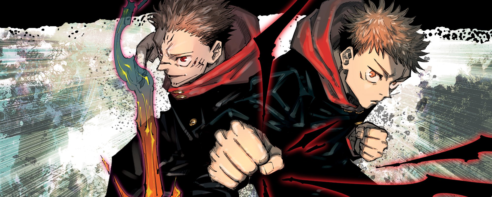

Jujutsu Kaisen

The story of Jujutsu Kaisen is set in a world where Cursed Spirits feed on unsuspecting humans and fragments of the legendary and feared demon Ryomen Sukuna have been lost and scattered about.
Should any curse consume Sukuna's body parts, the power they gain could destroy the world as we know it.
Fortunately, there exists a mysterious school of Jujutsu Shamans who exist to protect the precarious existence of the living from the supernatural!